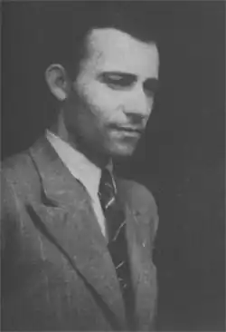

Народився 18 жовтня 1909 року в селі Головчиці Рівненької області.
Навчався спочатку в Дубенській гімназії, потім на юридичному факультеті Варшавського університету. Отримав ступінь магістра права. Працював у Дубні адвокатом та вчителем.
У 30-х роках Олекса одружився з Марусею Чучмай, донькою голови Дубенської "Просвіти", у них народився син Богдан. Батьківська хата Сацюків стала центром занять, що місцевий осередок "Просвіти" проводив для українців. Тут збиралися ті, хто хотів зберегти свою мову й культуру та мріяв про незалежність України. Тож не дивно, що і Олекса, і його молодші брати згодом вступили до Організації Українських Націоналістів. У 1939 році на Рівненщину прийшли більшовики. Олекса одним з перших потрапив за ґрати. На щастя, українські підпільники здійснили напад на Дубенську в'язницю і Олексі вдалося врятуватися. Про жахливі події того часу Сацюк згодом написав книгу "Смертоносці". У 1941 році більшовиків змінили німці, які призначили Олексу Сацюка головою управи в Дубно. На цій посаді Олекса рятував від знищення та вивезення до Німеччини земляків-українців. Сацюк розпочав друк шкільних підручників українською мовою, сприяв випуску журналу "Школярик" та створенню видавництва "Лад", заснував Музичний музей ім. Леоновича, підтримував діяльність просвітницьких та релігійних громад. Але згодом Олекса розчарувався у діях німецької влади і у вересні 1942 року покинув посаду. Був заарештований спочатку польською, потім радянською владою. В 1945 році йому вдалося емігрувати. З 1945 по 1947 роки Сацюк жив в Австрії, з 1947 по 1949 роки – в Аргентині, а з 1949 року він назавжди оселився в США. В еміграції Олекса займався перекладами творів, гуртував осередки українських письменників-емігрантів, допомагав молодим авторам. Помер 3 червня 1960 року в Чикаго.